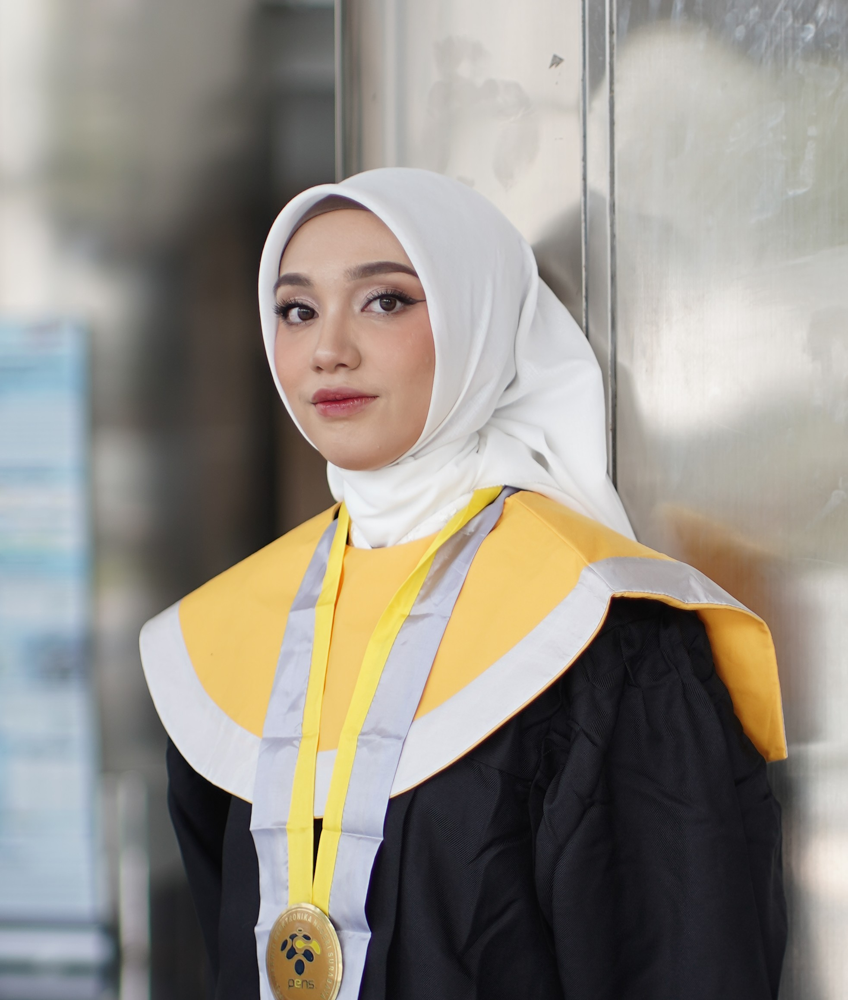

Aspiring Data Analyst — Turning Raw Data into Actionable Insights

Tiga nilai utama yang saya bawa sebagai kandidat Data Analyst untuk perusahaan Anda.
Kemampuan mengolah dataset besar menggunakan SQL, Python, dan Excel untuk menemukan pola dan insight yang mendukung keputusan bisnis yang lebih cerdas.
Mengubah data kompleks menjadi dashboard dan laporan visual yang mudah dipahami oleh semua stakeholder, dari tim teknis hingga manajemen.
Setiap analisis yang saya lakukan berorientasi pada rekomendasi konkret dan dampak nyata bagi bisnis, bukan sekadar angka dan grafik.
Pengalaman praktis yang membentuk kemampuan analitik dan profesionalisme saya.
Bertanggung jawab merencanakan, mengawasi, dan mengkoordinasikan operasional harian di lantai produksi agar target output, kualitas, dan efisiensi tercapai sesuai stadar.
Mengemban tanggung jawab dalam mengkoordinasikan operasional akademik untuk mata kuliah, mengelelola alur informasi serta validasi data nilai dan absensi mahasiswa dengan tingkat ketelitian yang tinggi.
Berperan dalam mendukung operasional infrastruktur satelit dan jaringan ATM di wilayah Jawa Timur, dengan fokus utama pada pemeliharaan teknis serta manajemen databse aset dan biaya yang akurat untuk mendukung efisiensi laporan perusahaan.
Berperan sebagai Programmer dan bendahara pada tim robotika berprestasi nasional, mengintegrasikan keahlian pengembangan algoritma pergerakan robot dengan manajemen anggaran yang terukur untuk memastikan kesiapan kompetisi dan akurasi laporan keuangan.
ProgrammerKeahlian teknis dan alat yang saya kuasai untuk pekerjaan data analytics sehari-hari.
Proyek akademik, tugas akhir, dan proyek mandiri yang menunjukkan kemampuan analitik saya secara nyata.
Saya sedang aktif mencari posisi Data Analyst dan terbuka untuk diskusi mengenai peluang kerja, wawancara, maupun kolaborasi proyek. Jangan ragu untuk menghubungi saya!